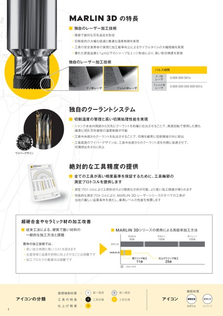

p.1製品の特長

MARLIN3Dの特長
■独自のレーザー加工技術
精密で鋭利な刃先品位を形成
切削抵抗の大幅な低減と最適な温度制御を実現
工具の安定長寿命の実現と加工能率向上によるサイクルタイムの大幅短縮を実現
優れた表面品質と1μm以下のシャープなエッジ形成により、高い形状精度を実現
独自のレーザー加工技術
パルス時間
ナノ秒 0.000000001s ナノ秒
レーザ
フェムト秒 0.000000000000001s フェムト秒
ナノ秒レーザ フェムト秒レーザ ナノ秒レーザレーザ フェムト秒レーザ レーザ
独自のクーラントシステム
■切削温度の管理と高い切屑処理性能を実現
シャンク本体外周部から刃先にクーラントを的確に吐出させることで、高速回転で使用した際も
確実に切れ刃先端部の温度制御が可能
工具中央部からクーラントを吐出させることで、切屑を確実に切削領域の外に排出
工具底面のワイパーデザインは、工具中央部からのクーラント流を外側に加速させて、
切屑排出をさらに向上
ワイパーデザイン
絶対的な工具精度の提供
■全ての工具が高い精度基準を保証するために、工具輪郭の
測定プロトコルを提供します
測定プロトコルにより工具形状のより精密な分析が可能、より高い加工精度が得られます
包括的な測定プロトコルにより、MARLIN3Dレーザーシリーズのすべての工具が
当社の厳しい品質条件を満たし、最高レベルの性能を発揮します
超硬合金やセラミック材の加工改善
■従来工法による、硬質で脆い材料の ■従来工法による、硬質で脆い材料の ■MARLIN3Dシリーズの使用による高能率加工方法■MARLIN3Dシリーズの使用による高能率加工方法
一般的な加工方法と課題 一般的な加工方法と課題 電極製造 電極加工 電極製造磨き仕上げ 電極加工
90分 130分 90分100分 130分
既存の加工技術では、 既存の加工技術では、 従来工法 従来工法
長い加工時間と高いコストを招きます
生産効率と品質を同時に向上させることは困難です 生産効率と品質を同時に向上させることは困難です MARLIN3D MARLIN3D
加工プロセスの最適化は困難です 加工プロセスの最適化は困難です 粗ミリング加工 11分 仕上げミリング加工 25分 粗ミリング加工 11分 仕上げミリング加工 25分
…段替え時間
推奨被削材質: 第一推奨 推奨被削材質 第二推奨 : 第一推奨 第二推奨 被削材質
アイコンの分類 工具の特長 アイコンの分類 : 工具材種 工具の特長 工具仕様 : 工具材種 アイコン 工具仕様 超硬合金 セラミック アイコン
仕上げ精度 : 仕上げ精度 : 超硬合金 セラミック
1